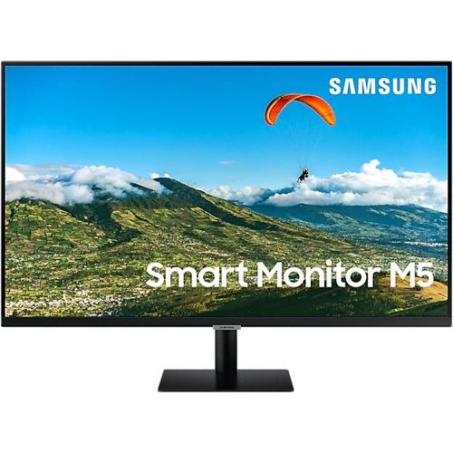

Eizo Coloredge
DCI-4K-Auflösung und herausragende Bildqualität für scharfe Bilder Der CG319X verfügt über eine DCI-4K-Auflösung von 4096 x 2160 (4K), was einer vierfach höheren Pixelmenge als Full HD (1920 x 1080) entspricht. Damit ist der Monitor das ideale Werkzeug für die 2D- und 3D-CGI oder visuelle Effekte - vom Compositing bis zum Colour-Grading. Der Bildschirm überzeugt mit einem sehr guten Kontrastverhältnis von 1500:1 und einer Helligkeit von 350 cd/m2. Das LCD-Modul mit IPS (Wide Gamut)-Panel gestattet 178 Grad Betrachtungswinkel, dadurch bleiben Farbtöne und Kontraste im Sehkegel des Anwenders stabil.